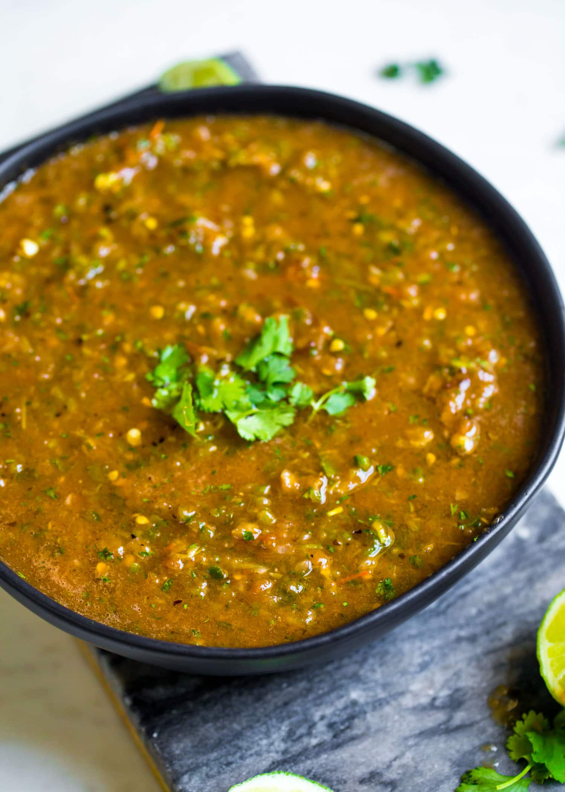

Mexican Salsa Recipe

Skirt Steak Mexican-Style Salsa
Mexican-style homemade salsa is perfect to use on a number of different foods including tacos, gorditas, chips, and much more! It combines just the right amount of spice with great flavor.
Prep Time: 10 minutes
Cook Time: 20 minutes
Total Time: 30 minutes
Servings: 15
Ingredients
- 6 medium size vine ripe tomatoes
- 2 jalapeno peppers
- 1 poblano peppers
- 1 lime juice
- 1 cup canned diced tomatoes
- 1 cup chopped fresh cilantro
- 2 cloves garlic minced
- 1 tbsp chicken bouillon powder or sea salt
Instructions
- Heat a large skillet to medium high heat. Place tomatoes and peppers in the skillet.
- Continue to saute, rotating the vegetables occasionally, so several sides begin to blister. See photos above. This will take around 20 minutes. Set aside to cool.
- Once cooled, chop off the stems of the peppers, and remove the seeds from the jalapeño (you can also keep some seeds for more heat in your salsa). Cut the vegetables into large pieces.
- Place tomatoes, peppers, onions, lime, and canned tomatoes into a blender and pulse quickly until just mixed (about 5 seconds). Add garlic, cilantro, and bouillon. Pulse for another 15 seconds until well blended but chunky.
- Place in a large bowl and refrigerate until cooled before serving. Serve with your favorite Mexican dish or with chips.